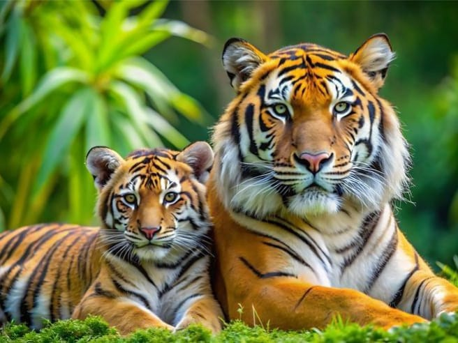
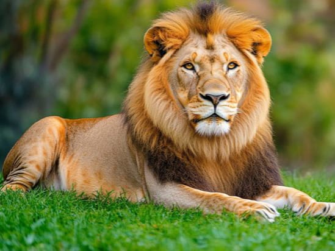
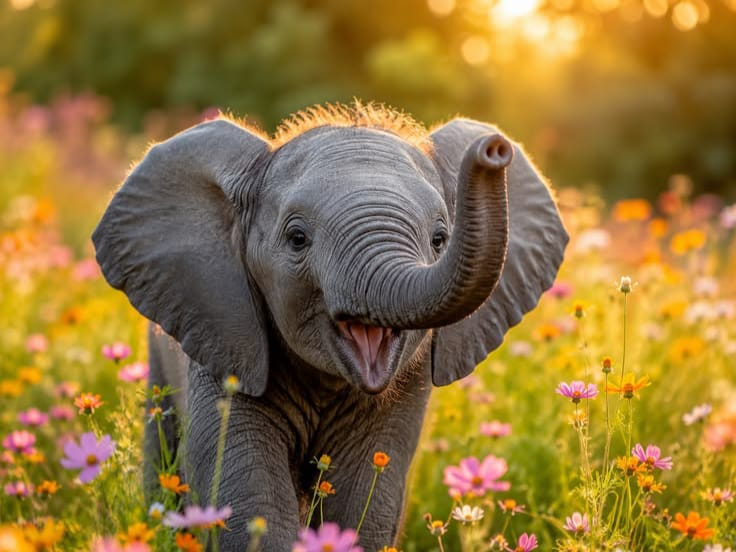
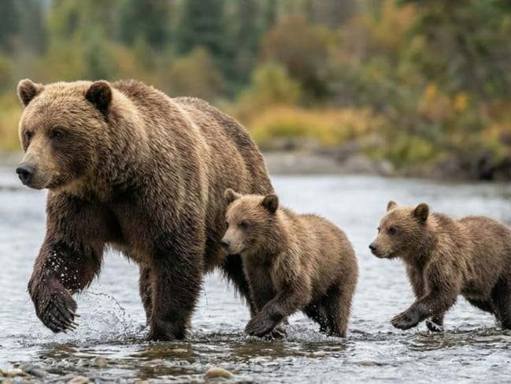
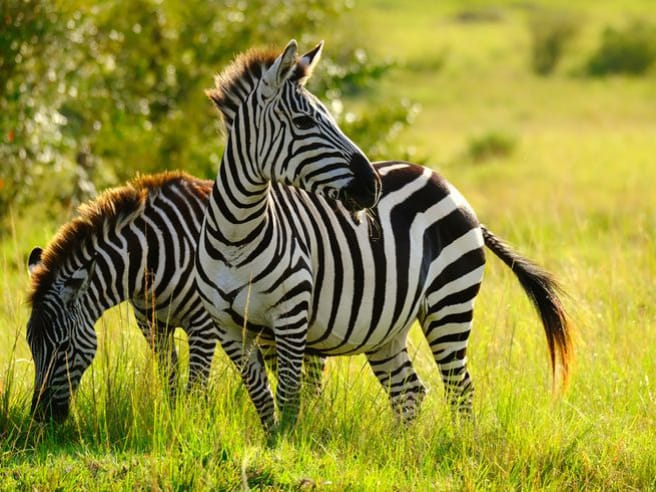
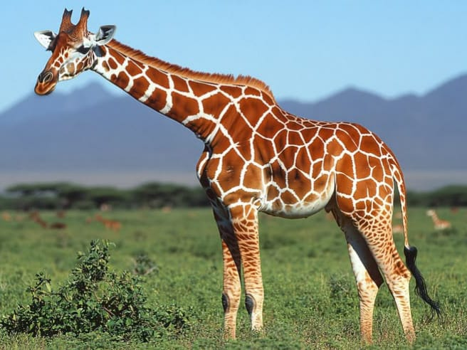
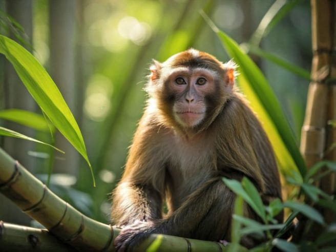

Discover amazing facts about the incredible animals of the wild!
← Back to CategoriesWild animals live in natural environments such as forests, grasslands, mountains, deserts and wetlands. Each animal has special features and behaviours that help it survive in its habitat.






